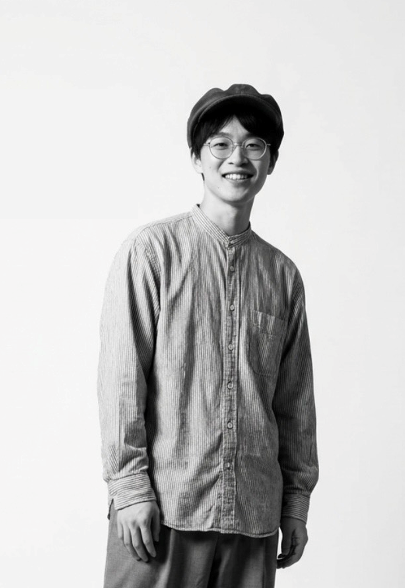

Web制作
資料作成
返信：原則24h以内
ヒアリングから設計まで、
伝わるWebを制作します。
飲食店・個人事業主・プロフィール用途など、目的に合わせたWebページを制作します。
まずはヒアリングで方向性を整理し、構成設計から丁寧に対応します。
対応
Web制作 / 資料作成
進め方
ヒアリング→構成→制作
連絡
原則24h以内返信

できること
- Web制作（店舗サイト / LP / プロフィールサイト）
- 資料作成（営業資料・説明資料）
- 文章整理（サービス説明・自己紹介）
- 業務改善についてのご相談も承ります
※SEOを意識した構成設計・タグ設計も対応可能です。
まず見てほしいもの
具体のアウトプットは 制作例 にまとめます。
（和風居酒屋LPなど、順次追加していきます）
制作の流れ
- ヒアリング：目的・ターゲット・素材を確認
- 構成提案：見出し・順番・文章の方向性を整理
- 初稿提出：まず形にして確認（ズレを短距離で調整）
- 修正・納品：整えて納品（公開まで必要ならサポート）
※メッセージは原則24時間以内に返信します。
お問い合わせ
相談はGoogleフォームで受け付けています。
「相談内容」「予算感」「希望納期」が分かればOKです。